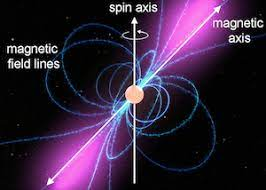

.jpeg)
How Things in The Universe Originated
Stars, like our sun are mostly made of Helium and Hydrogen. Stars shine by turning hydrogen into helium in its core. This process is called nuclear fusion. Fusion happens when lighter elements are forced together to become heavier elements. When this happens, a tremendous amount of energy is created.
The smallest stars in the universe are known as red dwarf stars. Red dwarf stars have masses from about 0.08 to 0.6 times that of the Sun. Objects smaller than red dwarf stars are called brown dwarfs and do not shine through the thermonuclear fusion of hydrogen. Lighter stars are much more plentiful than heavier stars, and red dwarfs are thus the most numerous type of star. The biggest star in the unviverse is Stephenson 2-18 The Stephenson 2-18 is 2,150 times that of the Sun. Every star you see in the night sky is actually bigger and brighter than our sun. Stars don't twinkle, so... the lullaby "Twinkle Twinkle Little Star" is false... yup.
The average star is between 1 and 10 billion years old, although some stars are older than this. Large stars live shorter lives compared to smaller stars, because large stars burn through their fuel much faster. Giant stars explode into a bright supernova when they die which would cause and immense amount of energy to be released and failed supernovas would form a black hole.
Stars can sometimes produce solar flares, a solar flare is a sudden flash of increased brightness on the Sun, usually observed near its surface and in close proximity to a sunspot group.
Normal stars and dwarf stars are not the only stars that exist, there are also neutron stars that are formed when a massive star runs out of fuel and collapses. The very central region of the star – the core – collapses, crushing together every proton and electron into a neutron.
Neutron stars are typically about 20 km (12 miles) in diameter. Their masses range between 1.18 and 1.97 times that of the Sun, but most are 1.35 times that of the Sun. Neutron stars have some of the strongest gravitational and magnetic fields in the universe. The gravity is strong enough to flatten almost anything on the surface. The magnetic fields of neutron stars can be a billion times to a million billion times the magnetic field on the surface of Earth.
Thought this star saga was over? Nope! There is another variation of neutron stars called Magnetars! Magnetars are formed just like a neutron star. Magnetars are around 20 kilometres (12 miles) in diameter and have a mass about 1.4 solar masses. They are formed by the collapse of a star with a mass 10–25 times that of the Sun, so in summary, Magnetars are even more dense than neutron stars and Magnetars have an insanely strong magnetic field. If you go within 1000km of a Magnetar, the magnetar's powerful magnetic field could instantly scramble and atoms and bioelectrical field of the human body. In other words, tear up the body's molecular structure, causing humans to disintegrate instantly.
Magnetars unlike other stars, have crusts, just like earth. And because of this, Magnetars can get starquakes. When the crust of a Magnetar heats up and finally tears, a fireball of electrons, photons and plasma emerges as a bubble on the side of the star, researchers believe. A bright beam of radiation attaches the fiery bubble to the magnetar, and emits a giant burst of energy. The closest magnetar from Earth lies about 50,000 light-years away in the constellation Sagittarius. Magnetars are relatively harmless, but if one gets too close to Earth, it could destroy the entire planet and all life on it.
And that sums up this page on info about stars! Make sure to keep reading to gain more knowledge!